Créez un compte sur Unity.com

Téléchargez Unity Hub du site Web
Rendez-vous à la page https://unity.com/fr/download pour télécharger Unity Hub.

Installation de Unity Engine
Ouvrez Unity Hub et installez Unity Editor 2021
Si Unity Hub ne vous propose pas l'installation de Unity Editor à l'ouverture, vous devez installer Unity Editor manuellement.


Installation de Visual Studio
Le démarrage de Visual Studio devrait commencer immédiatement après l'installation de Unity Engine.
Installation du paquet de support pour Unity

Connectez vous à votre compte Microsoft ou scolaire

Après l'installation, n'ouvrez pas de projet et fermez toutes les fenêtres de Visual Studio

Modifier une installation d'Unity Engine
Si lors de l'installation de Unity Editor vous avez oublié d'installer des options ou des paquets (comme Visual Studio Community), vous pouvez la modifier en cliquant sur engrenage.

Activation de licence
Se connecter à son compte Unity
Ouvrir le menu du compte
Ajouter une licence

Démarrer un projet 2D
En vidéo
Démarrer un projet Unity 2021 - YouTube
En captures d'écran pour Unity 2021.3


Animer et désactiver un objet ramassé

Compter nombre d'objets ramassés


Double saut
Rendre le personnage invincible temporairement


Désactiver le code du personnage lorsque le joueur perd


Désactiver des éléments lorsque le joueur perd

Particules en 2D


Écran titre
Nouvelle scène, nouveau Canvas et nouveau Input Sytem


Ajoutez une image
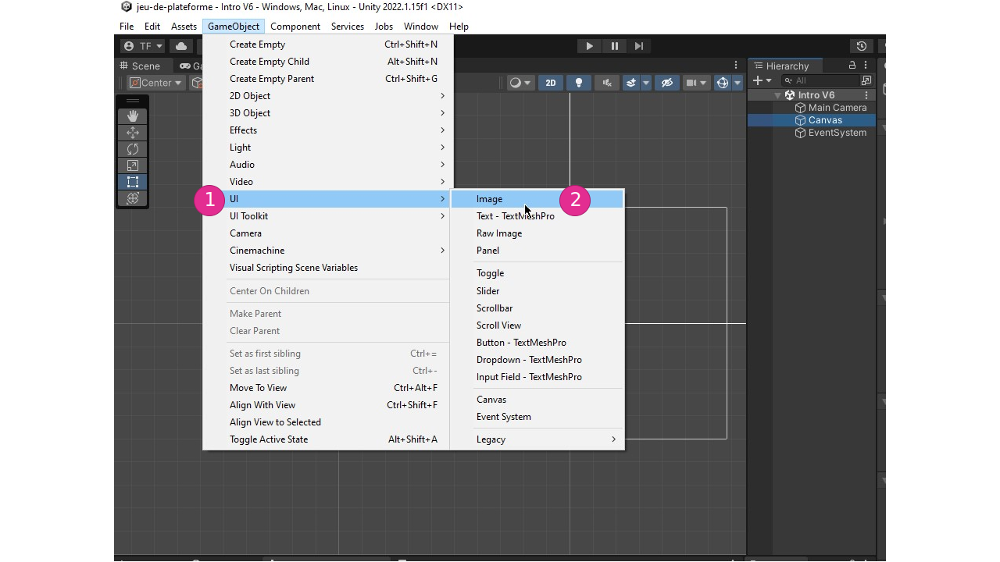
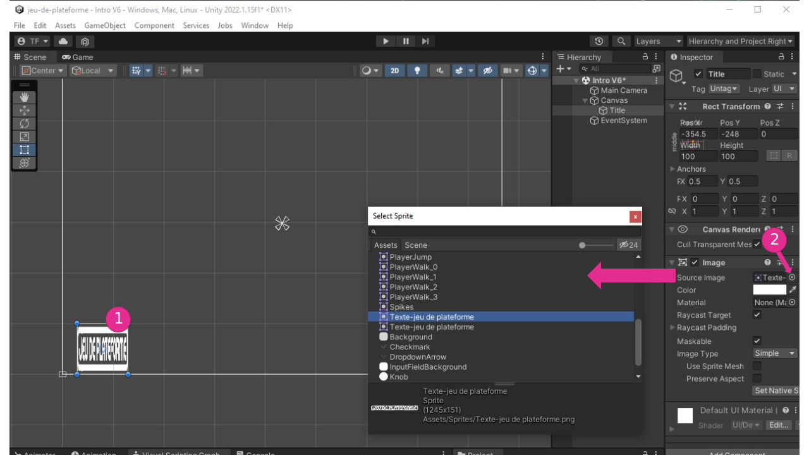

Ajoutez un texte TextMeshPro

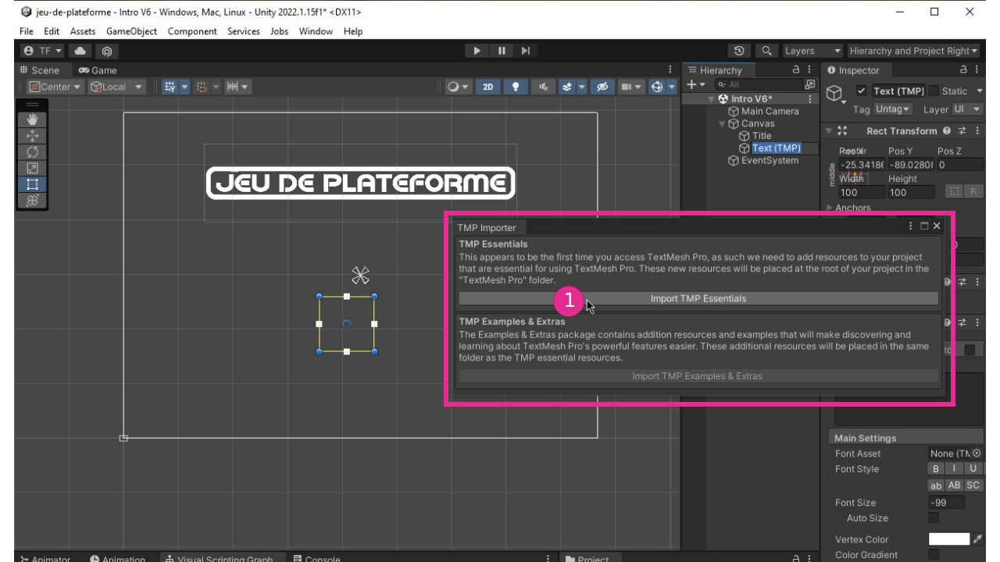


Ajoutez un Panel


Ajoutez un bouton


Ajoutez le code des boutons et ordonnez les scènes


Menu qui s'affiche lorsque le joueur perd


Afficher la valeur d'une variable


Détecter lorsque le personnage entre en Trigger avec la porte


Exporter un projet


Démarrer un projet HDRP
Vidéos
- CRÉER UN PROJET HDRP - YouTube
- NAVIGUER DANS UNE SCÈNE 3D - YouTube
- CRÉER UNE SCÈNE HDRP - YouTube
- CONFIGURER UN VOLUME - YouTube
Importer un modèle Maya
Vidéos
Capsules vidéo réalisées par Charlène : capsules-video-maya2023
Contrôleur de personnage (FPS, Third Person)
Ces instructions utilisent le paquet suivant : Starter Assets - First Person Character Controller | Essentials | Unity Asset Store
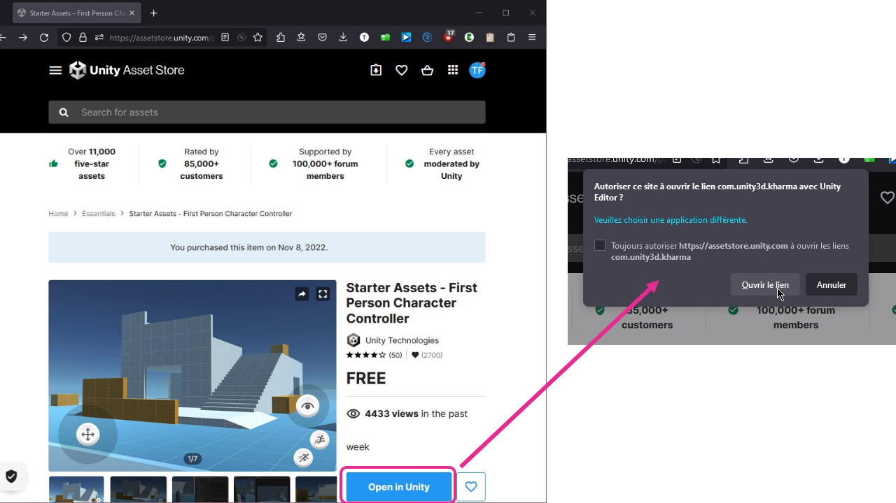
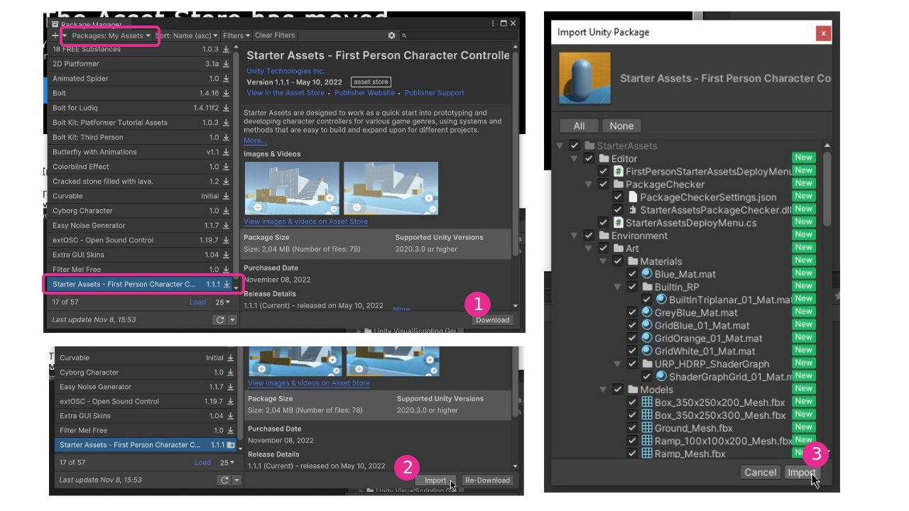
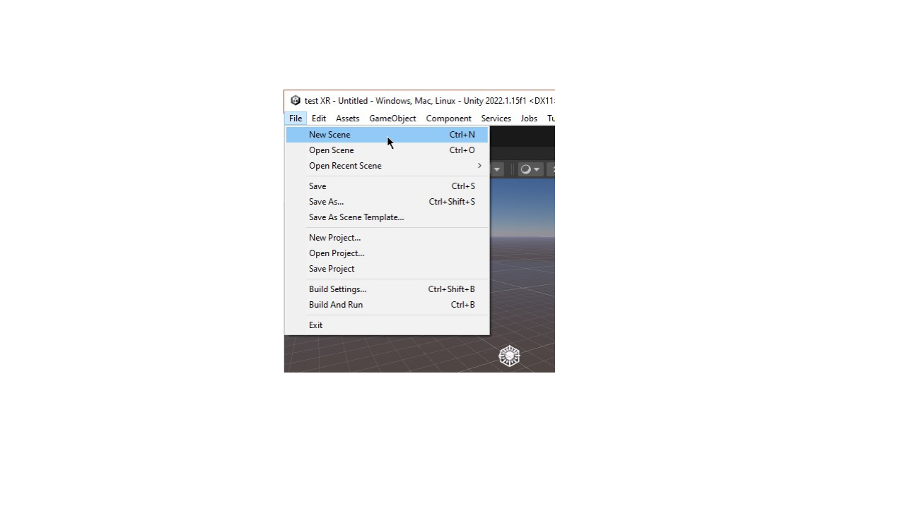


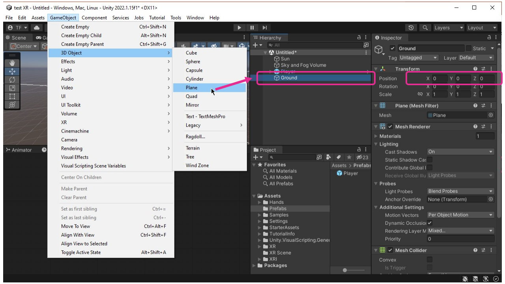
Réparer les matériaux magentas
Le problème magenta
Il arrive parfois lors de l'importation de paquets ou de modèles que le matériau s'affiche en magenta dans la fenêtre de scène. Cela indique un problème avec le Shader du matériau.

Réparation du problème avec le «HDRP Wizard»
Introduction au casque Quest


Modes de jeu «Guardian»
Votre sécurité physique est importante lorsque vous utilisez votre casque Oculus. C’est pourquoi vous devez configurer une limite Guardian. Les modes de jeu Guardian indiquent la taille de la zone de jeu requise pour l’expérience et le degré de mouvement physique nécessaire au jeu.
Limite «Roomscale»
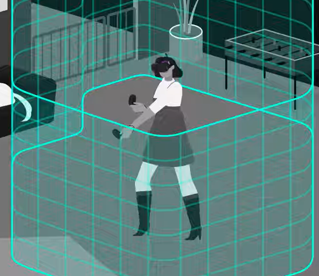
Guardian Roomscale permet de définir une limite virtuelle qui vous aidera à rester dans une zone de jeu dégagée. Elle apparaîtra dans votre expérience VR si vous vous approchez trop près du bord de la zone de jeu définie.
Lorsque vous configurez votre limite Guardian, laissez de l’espace entre les murs et votre zone de jeu et autour des objets. Gardez à l’esprit que Guardian n’est pas en mesure de détecter des gens ou des animaux qui entrent dans votre zone de jeu; choisissez donc une zone que vous pouvez maintenir dégagée, même lorsque vous portez le casque.
Limite stationnaire
La limite stationnaire peut être utilisé pour les zones de jeu plus réduites où votre corps ne se déplcara pas beaucoup dans l'espace. Nous vous recommandons d’utiliser une limite Guardian stationnaire pour les modes de jeu assis et debout.
Santé et sécurité
Dégagez toujours la zone de jeu avant d’enfiler votre casque. Vérifiez tout obstacle que vous seriez susceptible de heurter même les bras ouverts. Lorsque vous configurez votre limite Guardian, laissez de l’espace entre les murs et votre zone de jeu et autour des objets. Gardez à l’esprit que Guardian n’est pas en mesure de détecter des gens ou des animaux qui entrent dans votre zone de jeu; choisissez donc une zone que vous pouvez maintenir dégagée, même lorsque vous portez le casque
Relier le casque à l'ordinateur par «Link/Rift»
Configuration de l'ordinateur


Activer Link/Rift


Visualiser le bureau dans Link/Rift

Ajouter XR à un projet HDRP
Préalables
Avant de commencer, assurez-vous de démarrer un projet HDRP.
«HDRP Wizard»
Paquet XR Plugin Manager
XR Interaction Toolkit
Preset Manager
Vidéo complémentaire
How to Make VR Games in 2022 - Updated Unity VR Tutorial - YouTube
Créer une scène XR HDRP
Préalables
Avant de commencer, assurez-vous que vous avez suivie les instructions de la section Support XR en HDRP.
«Action Based» ou «Device Based»
Il existe souvent 2 versions (ou plus) des Scripts ou Components pour la XR. En cas de doute, choisissez la version «Action Based».
Nouvelle scène

«Sky and Fog Volume» et «Motion Blur»
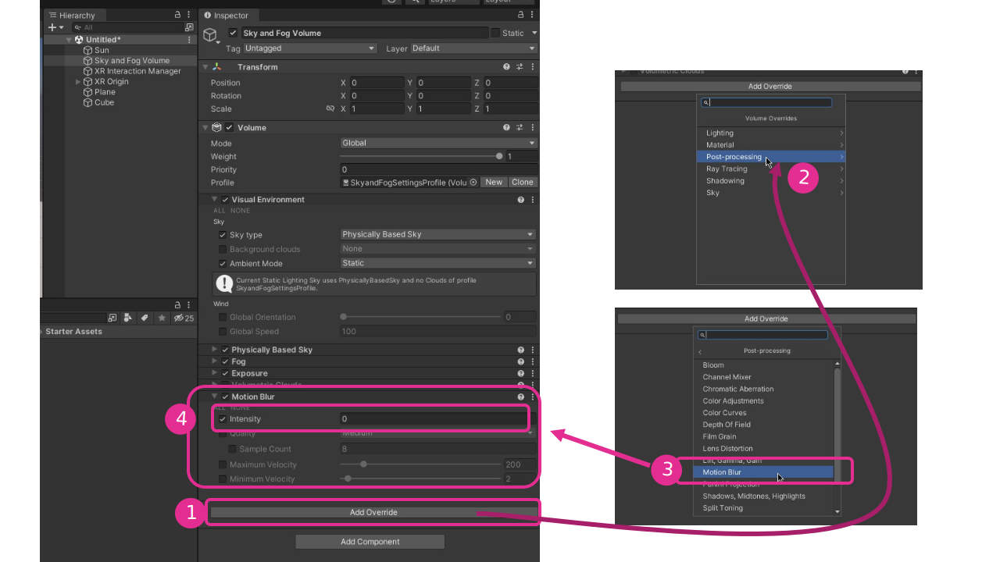
XR Origin

XRI Default Input Actions

Validation de la configuration des contrôleurs
Prefab XR

Vidéo complémentaire
How to Make VR Games in 2022 - Updated Unity VR Tutorial - YouTube
Objets attrapables(Grabbable)
Ajouter un objet à attraper

Script «XR Grab Interactable»
Vidéo complémentaire
ATTRAPER DES OBJETS AVEC SES «MAINS LASERS» - YouTube
Douilles (Sockets) XR
Vidéo complémentaire
How to use VR Sockets (and XR Interaction Toolkit) in Unity 2021.2 - YouTube
Bouton XR
A Beginner's Guide to Making VR Buttons - YouTube
Locomotion en XR
Désactivation de la rotation des objets tenus

Locomotion continue avec la manette de la main gauche

«Snap Turn» de la caméra avec la manette de la main droite
«Ground Plane»
Vidéo complémentaire
Ajouter le saut à la locomotion de base
Préalable
- Avoir la locomotion de base fonctionnelle : Locomotion de base avec les manettes de pouce
Configuration du script «Continuous Move Provider» du «XR Origin»

Configuration de l'action de saut dans «XRI Default Input Actions»

Ajout et assignation du Layer «Ground»
Ajout du Script Graph de saut au «XR Origin»
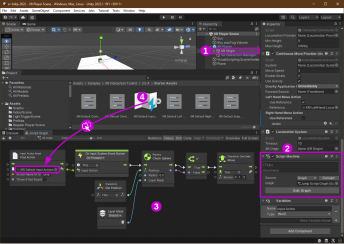
Téléportation
Vidéo
- How to Teleport in Unity VR with XR Interaction Toolkit - YouTube
- Part 6: Teleportation in VR - How to Make a VR Game - YouTube
Nage
Vidéo
Gorille
Vidéo
Importation d'images pour UI en 3D
Problème : les images importées ne sont pas disponibles pour les interfaces utilisateur
Lorsque nous travaillons dans un projet 3D, Unity importe par défaut les images en tant que texture. Cependant, les textures ne peuvent être utisées pour les interfaces utilisateur (UI).
Solution : importer les images en tant que Sprite
Pour pouvoir utiliser ces images dans des interfaces utilisateur (UI) nous devons forcer l'important des images en tant que Sprite.
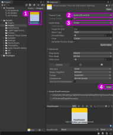
XRUI «World Space»
AJOUTER UNE INTEFACE UTILISATEUR UI À UN PROJET XR - YouTube
Vidéo complémentaire
UI Using Unity XR Interaction Toolkit | How to Make a User Interface That Works in VR - YouTube
XR UI attrapable
INTERFACE ATTRABABLE - YouTube
Vidéo complémentaire
UI Using Unity XR Interaction Toolkit | How to Make a User Interface That Works in VR - YouTube
Détection du casque
The Secret to Virtual Reality: Make VR Games Without the Headset - YouTube
Mains XR
Modèles 3D
Vidéos complémentaires
Animation des mains
- How to ANIMATE Hands in VR - Unity XR Beginner Tutorial (New Input System) - YouTube
- Part 3: Hand Animation and Reading Input from VR Controllers - How to Make a VR Game - YouTube
«Auto Hand» (payant mais très puissant)
Particules en HDRP
Vidéos
- INITIALISER UN SYSTÈME DE PARTICULES - YouTube
- CRÉER LE BON MATÉRIEL HDRP POUR LE SYSTÈME DE PARTICULES - YouTube
- MODIFIER LE SHADER GRAPH DU MATÉRIEL HDRP POUR LE SYSTÈME DE PARTICULES - YouTube
- Explorer les systèmes de particules - YouTube
- Exemples de VFX (systèmes de particules version 2) - YouTube
KlakNDI de Keijiro
KlakNDI permet d'envoyer l'image de la scène, de la caméra ou d'une texture par NDI.
Importer dans Unity
Pour importer KlakNDI de Keijiro nous devons l'ajouter dans la liste de paquets.
Voici l'information à inscrire dans les paramètres du gestionnaire de paquets (voir figure ci-bas) :
- Name:
Keijiro - URL:
https://registry.npmjs.com - Scope:
jp.keijiro

Ajout à la scène

Configuration de la Game Window
La «Game Window» doit toujours être visible pour que le flux NDI soit mise à jour. Si elle est cachée, le flux NDI sera pausé. Il est donc recommandé de :
- Détacher la fenêtre «Game Window»
- Vérouiller la résolution de la «Game Window»
Tester avec le «Studio Monitor» de NDI Tools

Mappage de données
Unity ne possède pas de fonction de base pour le mappage des données comme dans Max (avec l'objet scale) ou Arduino (avec la fonction map). Ci-bas, vous trouvez un Script Graph vous permettant de reproduire les fonctionnalités de [scale] ou map.


Vitesse d'un son selon la proximité
Préalables
Téléchargez le graphe pour le mappage de données
Configuration de la source sonore
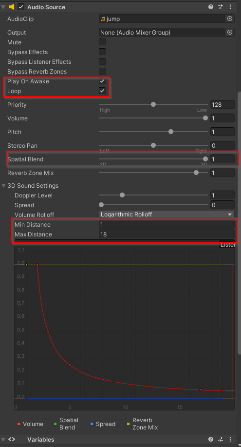
Ajout du graphe sur la source sonore
Allumer une lumière selon un «Trigger»
Préparation de la scène


Première version du code
Deuxième version du code
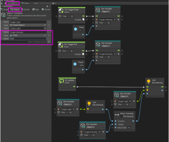